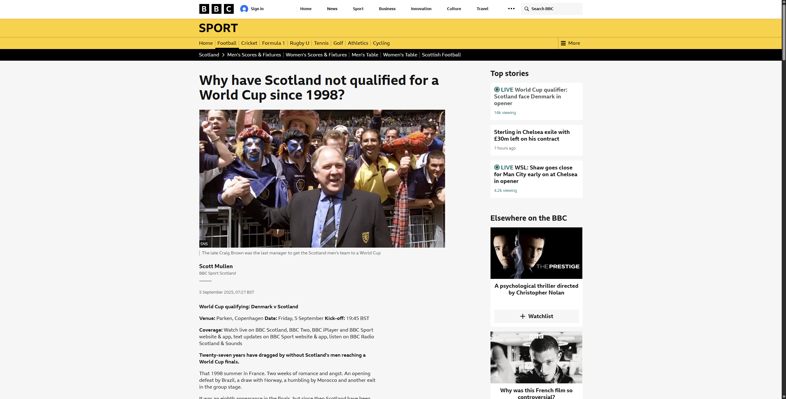

Veja a Mágica Acontecer
Com um único clique, transforme artigos poluídos em um oásis de tranquilidade para seus olhos.
Antes

Depois
Instalação Manual
- Baixe e descompacte o arquivo .zip da seção de Releases.
- Abra o Google Chrome e acesse
chrome://extensions.
- Ative o "Modo de desenvolvedor" no canto superior direito.
- Clique em "Carregar sem compactação" e selecione a pasta que você descompactou.
- Pronto! O ícone do Leitor Zen aparecerá na sua barra de extensões.